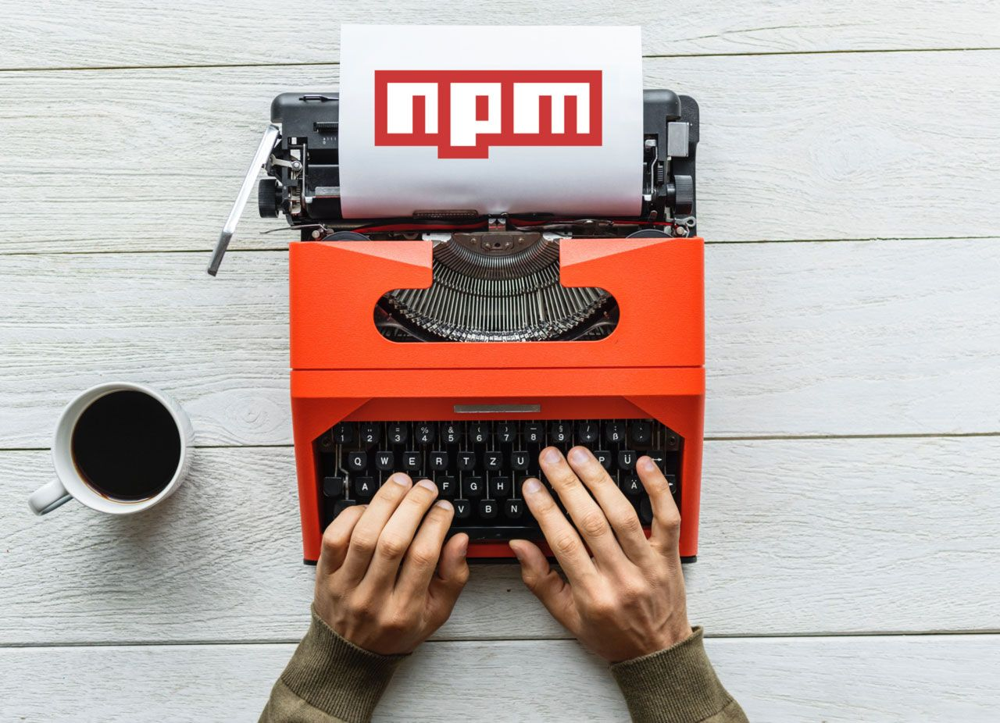

Create a react component as npm module

There are a lot of guides out there that advise you to use webpack to wrap up your components before publishing them to npm. This is absolutely not necessary. I would even consider it bad practice. Its much easier without webpack, too.
Lets say we have created a component, or even better - a collection of components that we want to re-use in other projects. In this case, we would move the components into a separate project and publish that project on npm. Lets do that.
The basic setup
First, create a separate project
We create an empty folder anywhere where we want to have our project located and
call npm init inside.
npm asks a couple of questions about the project and we end up with a
package.json file inside the project folder.
Code structure
I would advise to create a subfolder /src inside our project folder so we have
a place where our component source files can live that is not littered with
config files or readme files. So we create this subfolder and move our component
source(s) in there.
Inside the /src directory, create an index.js file that will be the entry point
of your module. It should import all your components and export them again. For
example like this:
import Component1 from './Component1';
import Component2 from './Component2';
import Component3 from './Component3';
export {
Component1,
Component2,
Component3
};The reason for this is that somebody who uses your module can import your components like this:
import {Component1, Component3} from 'myExampleModule';Install react as dev dependency
You certainly want to put additional work into your project and tweak your
components - especially IDEs will go easier on you, if you have react installed
in your project. You should install react with the --save-dev flag so it will
be listed as devDependency and not as regular dependency. This way react is
only installed for you while working on the project, but not when someone
installs your module into their app. We will set an option later in this post
that your module will actually consume the react instance that is used by the
parent application.
Babel comes into play - but why?
You need to know something about npm modules: There is a convention that all
code inside node_modules should be converted down to ES5. ES6+ code may not run
on some browsers or some versions of node. Also, when you are developing a react
application with create-react-app or a custom configured webpack+babel combo,
the default behavior of webpack is that only source files outside of
node_modules will be passed to babel. Other code remains untouched (because of
that convention I mentioned). So if there is actually a npm module containing
ES6+ or JSX, your build will fail.
Installing and configuring babel
So before we publish on npm, we need to convert our sources. Lets install babel for that:
npm install --save-dev @babel/core @babel/cli @babel/preset-env @babel/preset-reactOkay, that was actually 5 packages instead of "just babel", so lets explain that one by one:
@babel/core - This is actually babel. We don't want to use babel inside
some node scripts but from the command line, so we also need @babel/cli. I am
pretty sure you want to use ES6+ features of javascript so its recommendable
that we install @babel/preset-env which teaches babel about modern javascript
features. We are working with react components which are most probably written
in JSX, so we need to "teach" babel to understand JSX and how react stuff works.
Thats coming from @babel/preset-react.
Phew. We're almost there. Now, we need to create a babel config, so babel knows
which presets to use. Create a file named babel.config.js in your project root
and give it the following content:
module.exports = function (api) {
api.cache(true);
const presets = [ "@babel/preset-env", "@babel/preset-react" ];
const plugins = [ ];
return {
presets,
plugins
};
};This tells babel to use those two presets we installed before and that we do not use any special plugins right now.
The build script
Now we need a command that converts our sources before they are published to
npm. Open your package.json and add the key prepublishOnly to the scripts
object:
"scripts": {
"prepublishOnly": "babel ./src --out-dir ./dist -s inline"
},Okay, what does this do? It calls babel from the command line and tells it:
"Please convert everything inside ./src into the output folder ./dist. Also
please create sourcemaps (-s) and inline them into the javascript files.
If you execute now npm run prepublishOnly, a /dist folder will appear inside
your project containing the converted files. Jay! I highly recommend adding this
folder to your .gitignore file - you don't need it in your repository.
Why is the script named prepublishOnly? Thats a "magic keyword" for npm. This
script will be called automatically whenever you are going to publish anything
online on npm. So you cannot forget your compile step 😁
React as shared dependency
It is especially frustrating if you use react hooks and forget to add react as a peer dependency. If you mention react as normal dependency, your npm module will receive its own, separate copy of react that is not shared with the application that will consume your module in the end. Hooks for example cannot work in this case.
Set react as peerDependency in your package.json like this:
"peerDependencies": {
"react": "^16.8.0"
},Copy the react entry from your devDependencies field to peerDependencies.
Also, don't be too strict, here. If you use Hooks, you need at least react
16.8.0 - if not, an older version of react might be fine. The ^ at the
beginning of the version number means "anything from here or above". This is
important since the applications that will consume your module might use wildly
different versions of react. And since your module and the parent app will share
the same instance of react, you need to be as compatible as possible.
Last preparations to your package.json
We want to tell npm exactly which files are going to be published, since only
the contents of the /dist folder are necessary for anyone installing our
component(s). For this purpose, you can add a file property to your
package.json containing a list of files and/or folders to publish (the
package.json is always included in the published files - read more in the npm
help.
"files": [
"dist/*"
],The little star behind the folder name is a glob pattern, telling npm "everything inside dist".
So last but not least we need to define an entry point for our module, since
when we publish the module as exampleModule and someone imports or requires
this module, npm needs to know which javascript file inside our module is the
actual "default" file.
Remember the index.js file you created in /src before? This file has also been
moved to /dist and should work as our module index file. So we add it
explicitly as entry point to the package.json:
"main": "dist/index.js",Now lets publish
I will not cover how you create an account on npmjs.com and login to that
account in the command line. I assume you already did that. I also assume you
looked up that the name of your module was not yet taken and chose a unique
name. All you need to do now is calling npm publish.
Keep in mind that when you make changes to your project and want to publish them
again, you need to update the version field in your package.json according to
semver. If you don't change the version, you cannot
publish again.